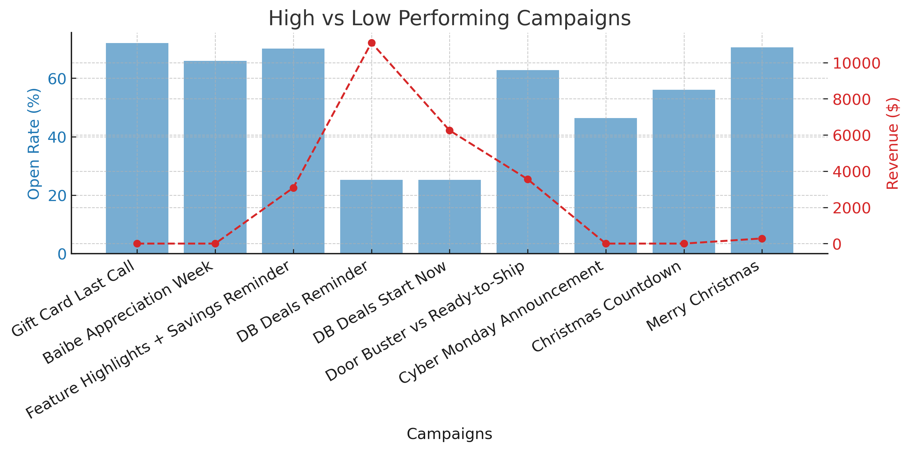
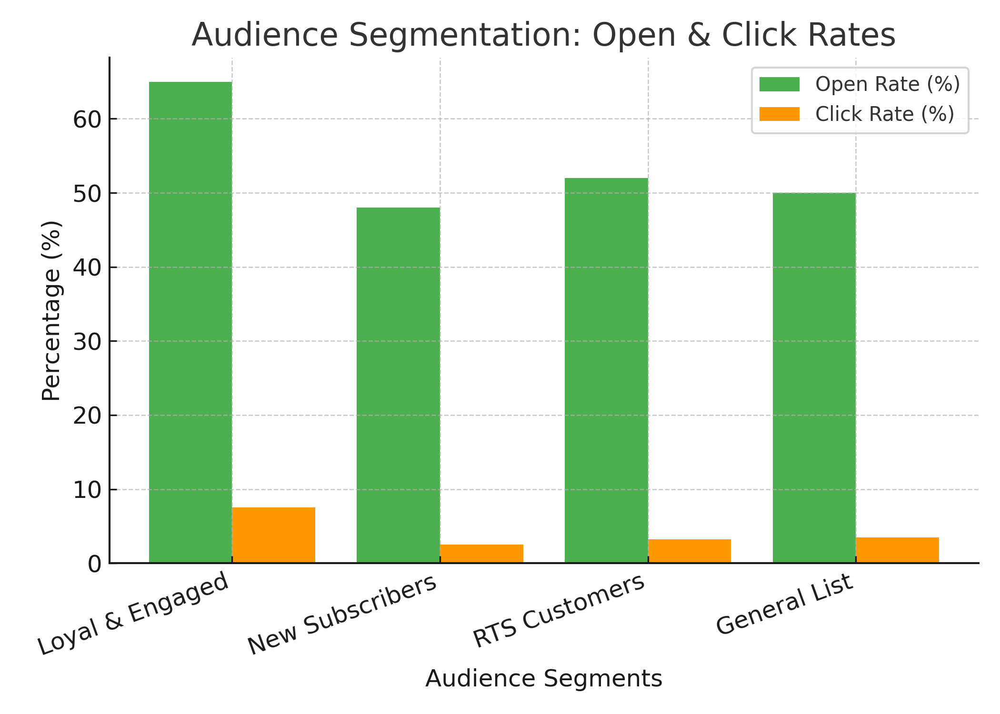

Email Marketing Campaign Performance Report
Overview
This report provides a final performance review of the email marketing campaigns before transitioning responsibilities to the Baibe Official internal team. It aims to deliver key insights, best practices, and actionable recommendations for future campaigns.
Key Performance Metrics Summary:
Overall Open Rate & Revenue Trends

The graph above illustrates the fluctuation of open rates and revenue throughout the campaign period. Key revenue spikes correlate with promotional emails, while engagement trends reveal...
- Total Emails Sent: 82,358
- Average Open Rate: 50.37%
- Average Click Rate: 3.57%
- Total Revenue Generated: $33,884.93
- Average Placed Order Rate: 0.29%
- Bounce Rate: 2.14%
- Unsubscribe Rate: Negligible across campaigns
Performance Analysis by Campaign Type
High vs. Low Performing Campaigns
The chart below visualizes the contrast between high-performing and low-performing campaigns based on open rates and revenue.
Audience Segmentation & Engagement
The chart below illustrates the engagement levels of different audience segments, highlighting how each group interacted with the email campaigns.
Insights & Recommendations
- Timing Matters:
- Peak Performance Timeframes: Midday (11 AM - 2 PM) and late evening (10 PM - 12 AM) campaigns saw the best engagement.
- Black Friday and Cyber Monday: Campaigns benefited from evening-to-midnight email sends.
- Low-Performance Timeframes: Emails sent in the early morning (before 9 AM) had lower engagement rates.
- Subject Line & Personalization:
- Personalized subject lines: (e.g., first name inclusion) had higher open rates.
- Time-sensitive language: ("Last Call," "Ends Soon," "Limited Time") increased urgency and engagement.
- Informational emails: Without a direct CTA resulted in low conversion rates.
- Audience Segmentation & Targeting:
- Loyal and Engaged Baibes: Segments demonstrated consistently high engagement.
- New subscribers: Responded well to welcome emails but showed lower purchase intent.
- RTS (Ready-to-Ship) customers: Engaged well but had low conversion rates—consider further retargeting.
- Click-Through & Order Conversion Optimization:
- High open rates, low CTR: Indicates content or CTA optimization is needed.
- A/B testing: Different CTA placements and copy might improve order conversions.
- Discount codes: Inclusion in subject lines and body text increased revenue.
- Bounce & Spam Complaints:
- Bounce rates: Remained under 5% (industry standard), with anomalies in larger email blasts.
- Spam complaints: Were negligible but should still be monitored—avoid excessive email frequency.
Actionable Next Steps
- Continue segmenting lists for targeted messaging. VIPs and Engaged users should receive priority on limited-time offers.
- Optimize email send times based on past performance (midday and late-night for promotions, morning for engagement-based emails).
- Refine CTA placement and content to ensure a clear path to purchase.
- Use more personalized and urgency-driven subject lines to boost engagement.
- Expand A/B testing on CTA copy and design to enhance click-through and conversion rates.
- Re-engagement campaigns for non-converting segments to nurture them into customers.
- Monitor deliverability & spam complaints to prevent unnecessary list churn.
Conclusion
Overall, the email campaigns achieved strong engagement, particularly in pre-sale and limited-time promotions. However, there is room to optimize conversion rates through better segmentation, refined CTA strategies, and improved timing. By leveraging the insights from high-performing emails and mitigating weak areas, future campaigns can be even more impactful in driving revenue and customer loyalty.
Date: February 26, 2025
Download Report (PDF)